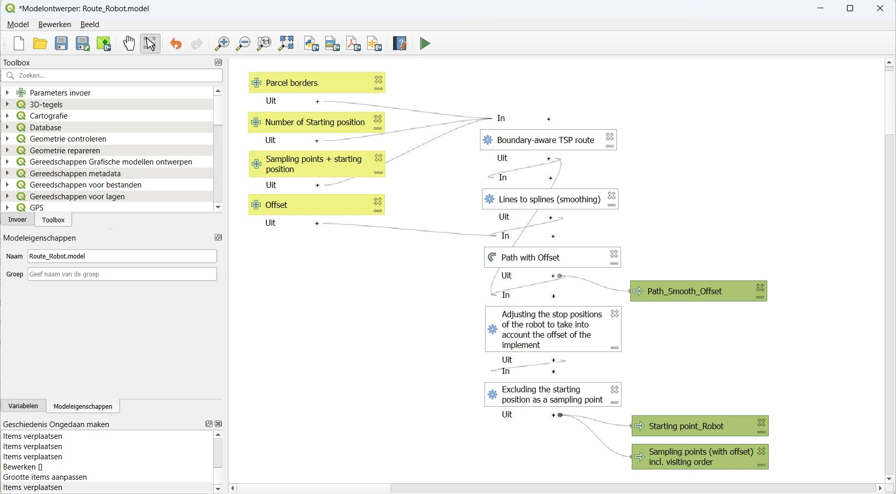
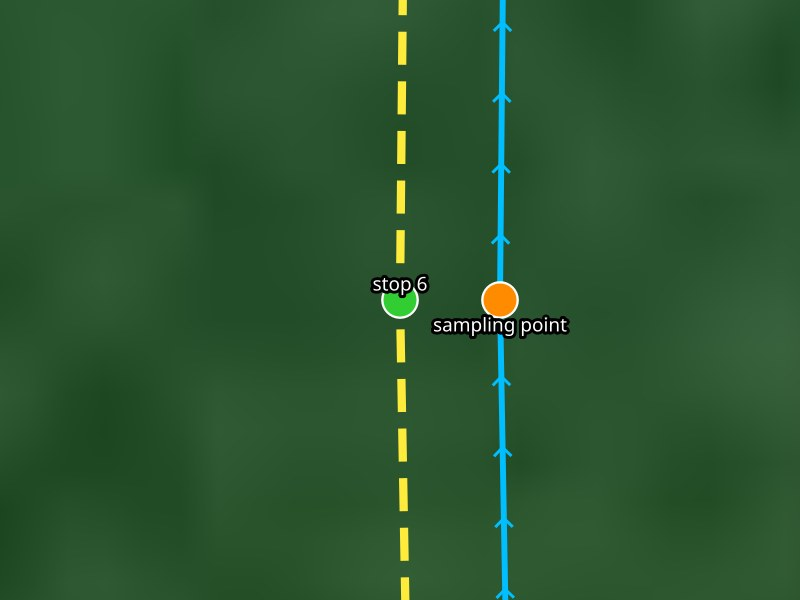
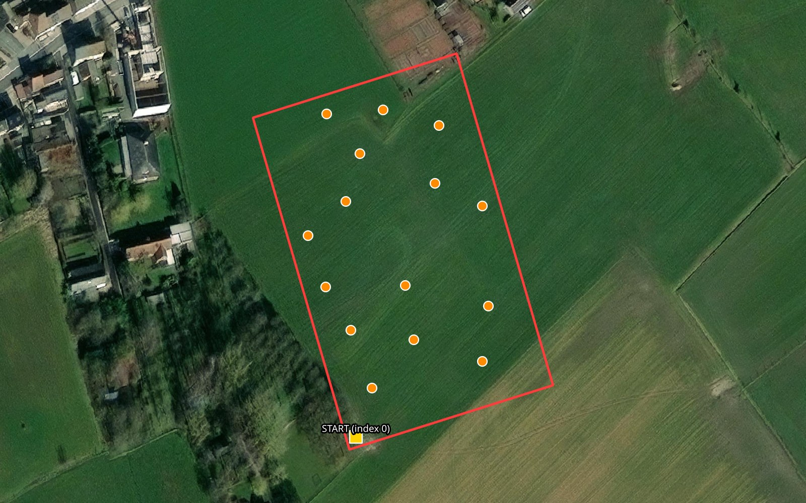
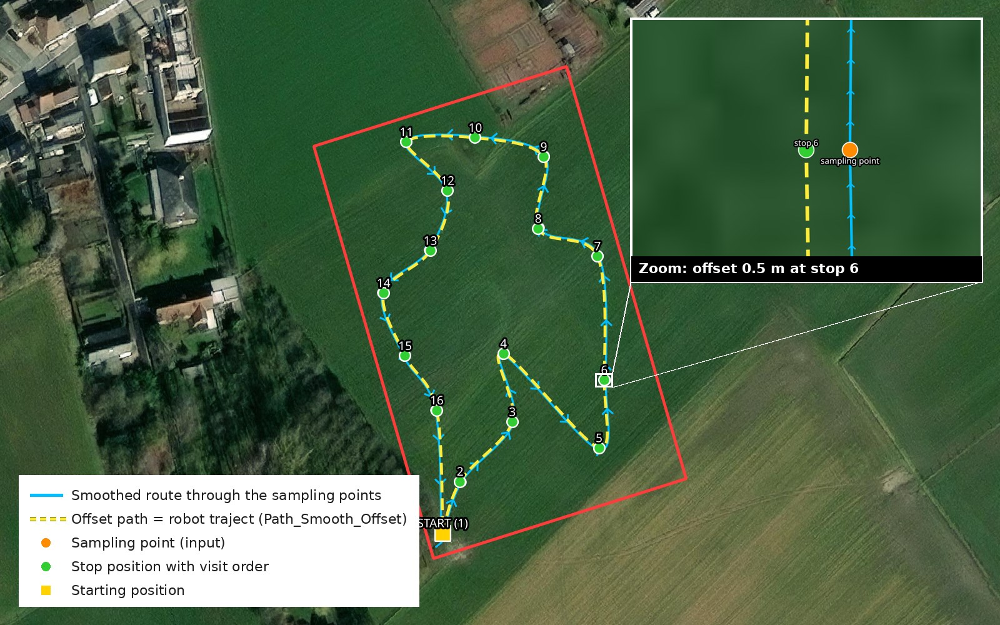

Tools
Sampling route generator (QGIS)
Route_Robot is a QGIS processing model (Route_Robot.model.model3) that prepares a sampling job for an ARTOF robot.
From a parcel boundary and a layer of sampling points it computes
the shortest round trip along the sampling points that stays inside the parcel (a Travelling Salesman Problem, TSP);
a smooth path for the robot along that route, shifted sideways by the offset of the implement;
the stop positions on that path, so that the implement is exactly above each sampling point when the robot stops;
the starting point of the robot.
The model is used for point-based (discrete) sampling implements, such as a top soil sampler, a soil profile sampler or a vertical penetrometer.
Requirements
Software |
Version |
Purpose |
|---|---|---|
QGIS |
3.22 or newer (tested on 3.44) |
Runs the model |
Plugin Plover |
3.2.5 or newer |
Boundary-aware TSP route ( |
Plugin Spline |
0.2 or newer |
Lines to splines ( |
Install the plugins in Plugins → Manage and Install Plugins…. Then add the model in the Processing Toolbox with Models → Add Model to Toolbox….
How the model works


Figure 1. The Route_Robot model in the QGIS model designer
Boundary-aware TSP route finds the shortest round trip from the starting position along every sampling point and back, without leaving the parcel (0.5 m margin). Holes in the parcel are no-go zones.
Lines to splines turns the angular route into a smooth curve the robot can follow.
Offset line shifts the smooth path sideways by the offset, the lateral distance between the robot reference point and the sampler. A positive offset shifts the path to the left of the driving direction, for an implement on the right-hand side.
Snap geometries moves every point onto the offset path: the stop positions.
Extract by expression splits off the starting position (
visit_order1) from the sampling points.


Figure 2. Detail at one sampling point: the robot follows the offset path and stops beside the sampling point, so the implement is above it
Input and output
All layers must use a projected coordinate system in meters, the UTM zone of the robot (e.g. EPSG:32631 for UTM zone 31N in Belgium).
Input |
Type |
Description |
|---|---|---|
Parcel borders |
Polygon |
The border of the parcel |
Sampling points + starting position |
Point |
All sampling points plus one extra point where the robot starts/ends |
Number of starting position |
Number |
Index of the starting position in the point layer, counted from 0 |
Offset |
m |
Lateral offset of the implement, e.g. 0.5 |


Figure 3. Example input: parcel border, sampling points and the starting position
Output |
Type |
Content |
|---|---|---|
|
Line |
The smooth, offset round trip: the robot’s traject |
|
Point |
The stop positions with |
|
Point |
The starting position on the path (optional) |


Figure 4. Example result: the smoothed route, the offset path and the numbered stop positions
Loading the result into the robot
Save
Path_Smooth_Offsetand the sampling points as ESRI Shapefile in the UTM coordinate system of the robot, e.g.traject.shpandsamples.shp.In the system add-on web app, create a new field.
Upload
traject.shpas the traject and the parcel border as the geofence (sourceFile, select all parts of the shapefile).Add a task with the hitch of the sampler, the type
discreteand the sampling implement, and uploadsamples.shp.Check on the map that the traject, the stops and the implement line up, and test the route in simulation before driving it with the robot.